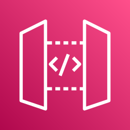
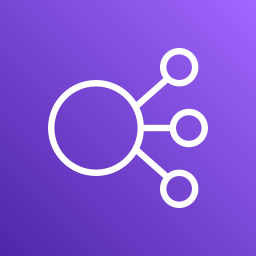

Лекція 16: Cognito і федерація
Середній рівень: усі правила з повної лекції, але простими словами. Повна: ../16-cognito-federation.md. Факти, які в повній лекції позначено «з пам'яті», тут із позначкою (не звірено).
Головна ідея
На іспиті головне: не сплутати user pool й identity pool.
- User pool відповідає на «хто ти?» й видає JWT.
- Identity pool відповідає на «що можна в AWS?» й видає тимчасові ключі AWS (STS).
C03 прямо не називає Cognito в навичках (лише «identity federation»), але сервіс є у списку.
Навіщо це так задумано
Щоб не писати самому реєстрацію, паролі й MFA, це віддають сервісу. Пулів два, бо «хто ти» і «що можна в AWS» це різні питання.
Крок 1. User pool проти identity pool
| User pool | Identity pool | |
|---|---|---|
| Питання | Хто ти? (автентифікація) | Що можна в AWS? (авторизація) |
| Зберігає користувачів | так | ні |
| Видає | JWT | тимчасові ключі AWS |
| Вхід через Google, SAML, OIDC | так | так |
| Гості | ні | так, окрема обмежена роль |
| Типове застосування | захист свого API | прямий доступ до S3 чи DynamoDB з клієнта |
Логіка вибору:
- API Gateway + JWT означає лише user pool.
- Клієнт сам викликає сервіс AWS означає identity pool (часто разом із user pool).
Крок 2. Токени
| Токен | Для чого |
|---|---|
| ID token | інформація про користувача (claims); для Cognito authorizer у REST API |
| Access token | права, scopes |
| Refresh token | оновлення перших двох |
Перевірка JWT: підпис за публічними ключами JWKS пулу, потім iss, aud, exp.
Крок 3. Що вміє user pool
- перший фактор: пароль, email OTP, SMS OTP, passkeys (WebAuthn);
- MFA: email OTP, SMS OTP, TOTP;
- Lambda triggers: pre sign-up, post confirmation, pre authentication, post authentication, кастомізація повідомлень. Приклад: post confirmation створює запис користувача в DynamoDB;
- федерація з соцмережами, SAML, OIDC;
- managed login (новий, з редактором стилів) і hosted UI (класичний): готова сторінка входу для user pool; домен використовує або один, або інший. Нові пули за замовчуванням отримують managed login.
Крок 4. Identity pool і «лише своє»
Identity pool роздає роль. Щоб кожен бачив лише своє, у політиці ролі використовують змінну ${cognito-identity.amazonaws.com:sub} у ARN, наприклад arn:aws:s3:::user-files/${cognito-identity.amazonaws.com:sub}/*.
Те саме для DynamoDB: умова dynamodb:LeadingKeys дозволяє лише рядки зі своїм partition key. Це fine-grained access (навичка 2.1.2).
Гості отримують окрему роль, і вона має бути дуже обмеженою.
Крок 5. Федерація без Cognito
| Сценарій | Механізм |
|---|---|
| GitHub Actions у AWS | OIDC і AssumeRoleWithWebIdentity |
| Корпоративний логін співробітників | SAML і AssumeRoleWithSAML, IAM Identity Center |
| Застосунок із Google | Cognito |
| Сервіс у чужому акаунті | AssumeRole між акаунтами |
Спільне: ніяких довгих ключів, лише тимчасові облікові дані STS.
Крок 6. Авторизація в API
| Спосіб | Що |
|---|---|
| Cognito authorizer | перевіряє токен user pool, без коду |
| Lambda authorizer | своя логіка, сторонній токен |
| IAM (SigV4) | клієнт має AWS-ключі (з identity pool) |
API Gateway із Cognito authorizer передає claims у event.requestContext.authorizer.claims, тож функція бачить, хто викликає.
Крок 7. Програмний доступ
- Порядок пошуку облікових даних SDK залежить від SDK і версії, але загалом так: змінні середовища, потім спільні файли конфігурації (профілі), потім облікові дані контейнера, потім роль EC2. Береться перше знайдене.
- SigV4 підписує запити до AWS.
- Роль завжди краща за ключі.
AssumeRoleу коді повертає тимчасові ключі на 15 хв - 12 год.
Крок 8. Cognito чи IAM
Ключові слова іспиту: «сотні користувачів», «мобільні користувачі», «вхід через SAML» означають Cognito. IAM для тих, хто всередині вашого AWS.
Крок 9. Захист входу в user pool
Це називається threat protection (раніше advanced security), працює у Plus-плані.
- Cognito оцінює кожну спробу входу (місце, пристрій) і дає ризик: low, medium або high.
- Ви вирішуєте реакцію: вимагати MFA, заблокувати чи лише записати в журнал. MFA просять лише коли є ризик.
- Окремо compromised credentials: порівняння пароля з відомими витоками. Працює для входу логіном і паролем, не для SRP і не для федерації.
Журнал входів і ризиків можна слати в CloudWatch Logs. Є режим «лише спостерігати» (audit only).
Крок 10. Lambda triggers (виклик синхронний, відповідь за 5 секунд)
| Етап | Trigger | Що робить |
|---|---|---|
| Вхід | Pre Authentication | прийняти чи відхилити вхід |
| Post Authentication | записати подію для аналітики | |
| Pre Token Generation | додати чи прибрати claims токена | |
| Реєстрація | Pre Sign-up | прийняти чи відхилити реєстрацію |
| Post Confirmation | привітання, логування | |
| Migrate User | перенести користувача зі старого каталогу | |
| Повідомлення | Custom Message | змінити текст і мову листів |
Крок 11. Як user pool підключають до API Gateway і ALB
- API Gateway: клієнт входить у user pool, отримує токен, шле REST API з токеном, API Gateway перевіряє токен у Cognito.
- ALB: вхід робить сам балансувальник. Потрібен HTTPS listener і правило
authenticate-cognito(абоauthenticate-oidcдля сторонніх IdP, потрібні Client ID і Secret).
Поле OnUnauthenticatedRequest:
| Значення | Що буде з невпізнаним користувачем |
|---|---|
authenticate (типово) |
перенаправлять на вхід |
deny |
401 |
allow |
пропустять без даних про користувача |
Редирект у налаштуваннях IdP: https://<DNS балансувальника>/oauth2/idpresponse. Потік такий: ALB перенаправляє на IdP, отримує код, міняє його на токени, бере claims і повертає запит на ціль. ID token до бекенда не передається, claims приходять у заголовку.
Крок 12. Identity pool: ще деталі
- Джерела: Amazon, Facebook, Google, Apple; користувачі user pool; OIDC і SAML; власний сервер входу (Developer Authenticated Identities).
- Є гості.
- Ролі: типові для автентифікованих і гостей, плюс правила вибору ролі за ID користувача. Ключі видає STS, у ролі в trust policy стоїть Cognito identity pools.
- Доступ «лише своє» через змінні політики.
| User pool | Identity pool | |
|---|---|---|
| Відповідає за | автентифікацію (хто ти) | авторизацію (що можна в AWS) |
| Видає | JWT | AWS-ключі |
| Гості | ні | так |
| Додатково | свій hosted UI з логотипом, Lambda triggers | ролі й політики IAM |
User pool + identity pool = автентифікація + авторизація.
Словник
| Термін | Що це |
|---|---|
| User pool | каталог користувачів: реєстрація, вхід, видає JWT |
| Identity pool | обмінює токен на тимчасові ключі AWS |
| JWT | підписаний токен з даними про користувача |
| ID token / Access token | хто ця людина і що їй дозволено в API |
| Refresh token | довговічний токен для отримання нових |
| Hosted UI | готова сторінка входу від Cognito |
| Lambda trigger | ваш код у моментах життєвого циклу входу |
| SAML / OIDC | стандарти входу через зовнішніх провайдерів |
🖼 Схема: Cognito User Pools: вхід і федерація
🖼 Схема: Cognito з API Gateway і ALB

API Gateway перевіряє токен у Cognito
ALB: HTTPS listener, action authenticate-cognito🖼 Схема: ALB з OIDC: 10 кроків
- Issuer
- Authorization, Token, User info endpoint
- Client ID і Client Secret
- дозволити redirect на DNS ALB
- і на CNAME застосунку
- шлях /oauth2/idpresponse
🖼 Схема: Lambda triggers і adaptive authentication
| Етап | Trigger | Для чого |
|---|---|---|
| Вхід | Pre Authentication | прийняти чи відхилити вхід |
| Вхід | Post Authentication | логування для аналітики |
| Вхід | Pre Token Generation | додати чи прибрати claims |
| Реєстрація | Pre Sign-up | прийняти чи відхилити реєстрацію |
| Реєстрація | Post Confirmation | привітання чи логування |
| Реєстрація | Migrate User | перенести з іншого каталогу |
| Листи | Custom Message | кастомізація й локалізація |
🖼 Схема: User Pool проти Identity Pool
- автентифікація: хто ти
- база користувачів
- hosted UI з логотипом
- тригери Lambda
- adaptive authentication
- авторизація: що можна
- ключі AWS для користувачів
- можуть бути guest
- мапінг на IAM ролі
🖼 Схема: Identity Pool: джерела й ролі
- роль за замовчуванням
- правила за user ID
- неавтентифікований доступ
- своя роль
Що запам'ятати на іспит
- User pool це «хто ти» й JWT. Identity pool це «що можна в AWS» й ключі STS.
- API з логіном потребує user pool. Прямий доступ до S3 потребує identity pool.
- Гість можливий лише через identity pool, з обмеженою роллю.
${cognito-identity.amazonaws.com:sub}у політиці дає доступ «лише своє».- Lambda triggers розширюють реєстрацію й вхід.
- Для GitHub Actions використовують OIDC, а не Cognito.
Перевірте себе
- Застосунку потрібен логін і захист власного API. Який пул?
- Мобільний клієнт має сам завантажувати в S3. Який пул?
- Що видає user pool, а що identity pool?
- Як дати доступ гостям?
- Як обмежити кожного користувача його папкою в S3?
- Як при реєстрації створити запис у DynamoDB?
- Який механізм використовує GitHub Actions для входу в AWS?
Відповіді
- User pool.
- Identity pool (разом із user pool).
- User pool видає JWT, identity pool тимчасові ключі AWS.
- Через identity pool з окремою обмеженою роллю для гостей.
- Змінна
${cognito-identity.amazonaws.com:sub}у ресурсі політики ролі. - Lambda trigger «post confirmation» у user pool.
- OIDC і
AssumeRoleWithWebIdentity.
Повна версія: 16-cognito-federation.md.